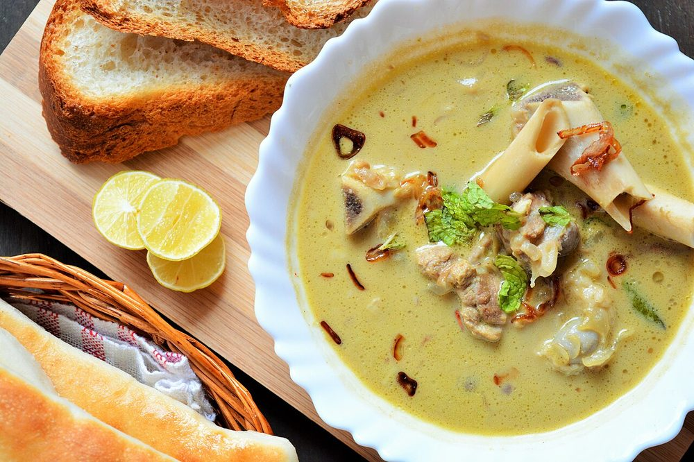

Contains: milk, tree nuts
Ingredients
Quantities for 6.
- 700g, bone-in pieces with marrow bones Muttonthe bones make the broth
- 200g, thick and whisked smooth Yogurt
- 30g, soaked 20 minutes in warm water Cashew
- 20g, soaked and skinned Almonds
- 1 tbsp, soaked Poppy Seedsoptional
- 2 medium, sliced Onion
- 1.5 tbsp, paste Ginger
- 1.5 tbsp, paste Garlic
- 5, slit Green Chillimarag is white and chilli-hot, not red
- 1 tsp, coarsely crushed Black Pepper
- 5, bruised Cardamom
- 1 piece Cinnamon
- 5 Cloves
- 1 Bay Leafoptional
- 1 blade Maceoptional
- 3 tbsp leaves Mint
- 3 tbsp, chopped Coriander Leaves
- 1, cut into wedges Lemon
- 4 tbsp Ghee
- 3 tbsp Creamfor a richer finishoptional
- 1.5 litres Water
- to taste Salt
Cookware
stovetop, pressure cooker, blender
Checked against the ingredient list for ten allergens: milk, egg, fish, crustaceans, tree nuts, peanuts, sesame, mustard, soy and gluten. Brands vary, so read the label on anything new to you.
Before you start
- Soak the cashews, almonds and poppy seeds in warm water for 20 minutes, then grind to a completely smooth paste with a little of the soaking water.
- Whisk the yogurt until it is perfectly smooth and leave it at room temperature. Cold yogurt splits the moment it hits the pot.
- Ask for mutton with marrow bones included; marag without them is just a thin curry.
Method
- Heat the ghee in a pressure cooker and add the cardamom, cinnamon, cloves, bay leaf and mace. Let them puff for 30 seconds.
- Add the sliced onion and cook 8 minutes until soft and pale gold. Stop before it browns, or the broth loses its whiteness.Colour in the onion means colour in the soup. Pale gold is the target.
- Stir in the ginger and garlic pastes and the slit green chillies and cook 1 minute.
- Add the mutton and sear on high for 5 minutes until the outside is sealed and no pink shows.
- Take the pot off the heat, wait a minute, then fold in the whisked yogurt in three additions, stirring continuously.Off the heat and in stages. This is the one step where marag most often curdles.
- Return to a low flame and cook 5 minutes until the yogurt tightens around the meat and no longer smells raw.
- Add the water, salt and half the mint. Pressure cook for 5 whistles, about 25 minutes, and let the pressure fall on its own.
- Open, and stir in the ground cashew and almond paste. Simmer uncovered 12 minutes until the broth thickens just enough to coat a spoon.Stir the base often here. Nut paste sinks and catches.
- Add the crushed black pepper and the cream, if using, and simmer 3 minutes more. Marag should stay drinkable, not stew-thick; loosen with hot water if needed.
- Finish with the remaining mint and the coriander leaves, and serve in cups with lemon wedges to squeeze in.
Safe temperatures: Whole cuts of mutton, beef and pork are done at 63°C / 145°F, rested 3 minutes. A long braise passes that well before the meat is tender. Reheat leftovers to 74°C / 165°F. FoodSafety.gov
Storage
Keeps 3 days refrigerated. Reheat gently over low heat without letting it boil, since a hard boil splits the yogurt; thin with hot water and re-check the salt and pepper before serving.
Nutrition Medium estimate
High protein: 28 g a serving, 34% of the calories
| Per serving423 g | Per 100 g | |
|---|---|---|
| Calories | 332 kcal | 79 kcal |
| Protein | 28.4 g | 7 g |
| Carbohydrate | 11.3 g | 3 g |
| of which sugars | 4.2 g | 1 g |
| Fibre | 2.3 g | 0 g |
| Fat | 19.6 g | 5 g |
| of which saturated | 9.2 g | 2 g |
| of which unsaturated | 8.9 g | 2 g |
Ingredients given to taste count as zero, so the real figures run a little higher. Nearest database match used for mutton. Estimated from raw ingredients using USDA FoodData Central.
More like this: Gluten-free Indian recipes · Indian soup recipes · Hyderabadi recipes
Times, yields, allergens and nutrition are guidance. Use your own judgement on doneness and on storing. More in About.